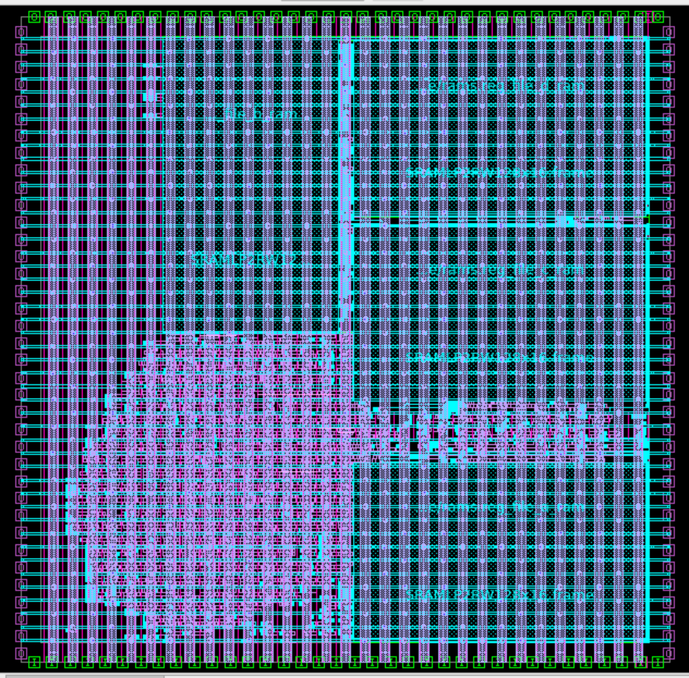
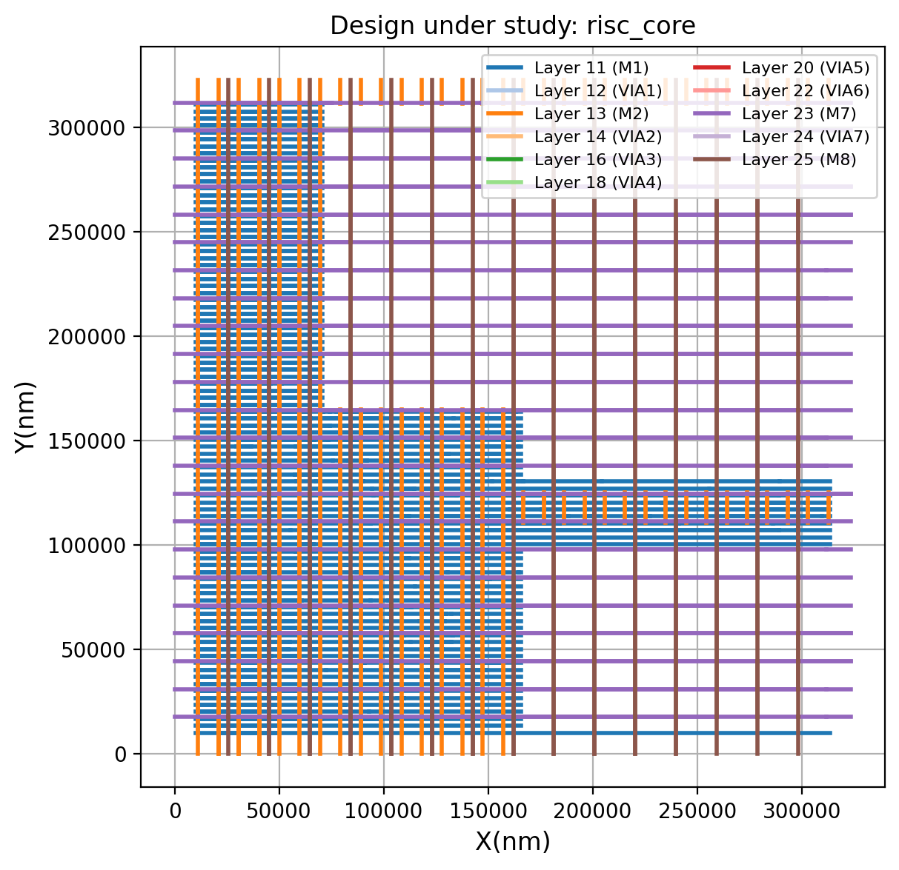
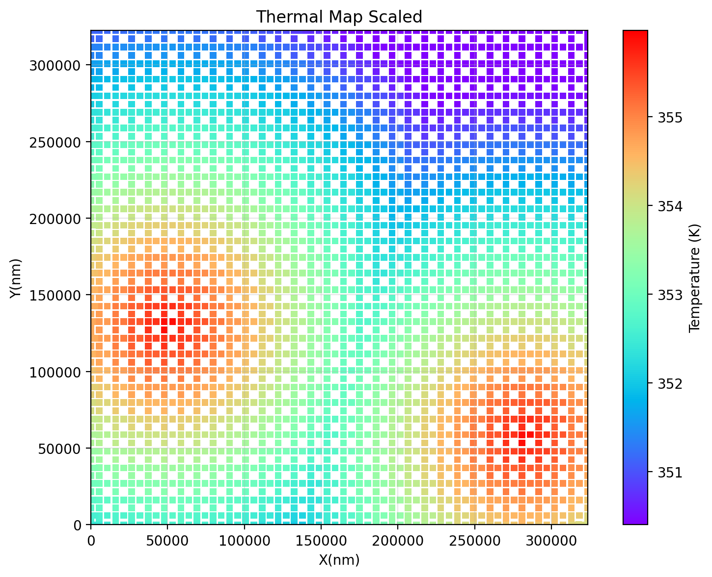
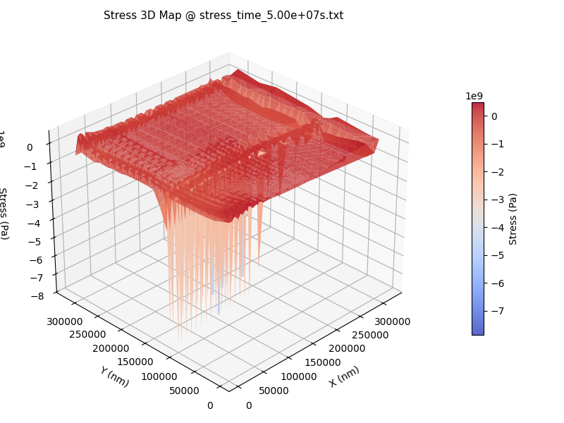
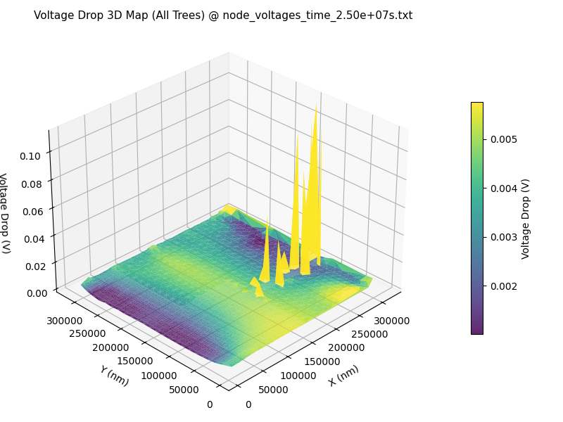
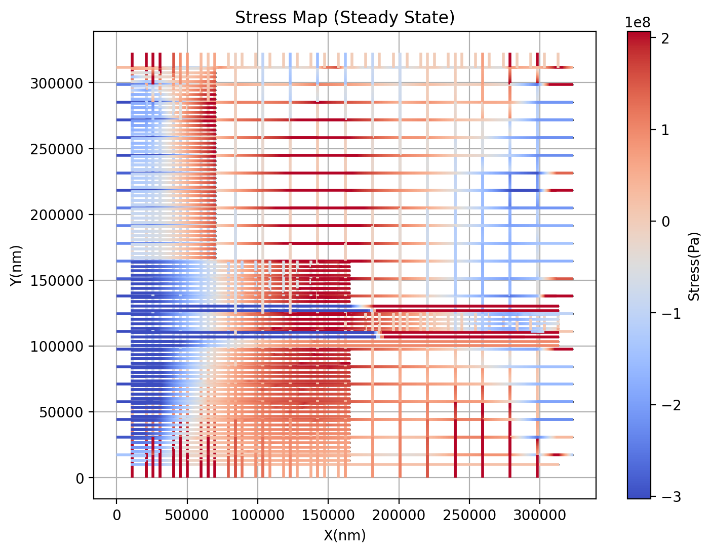
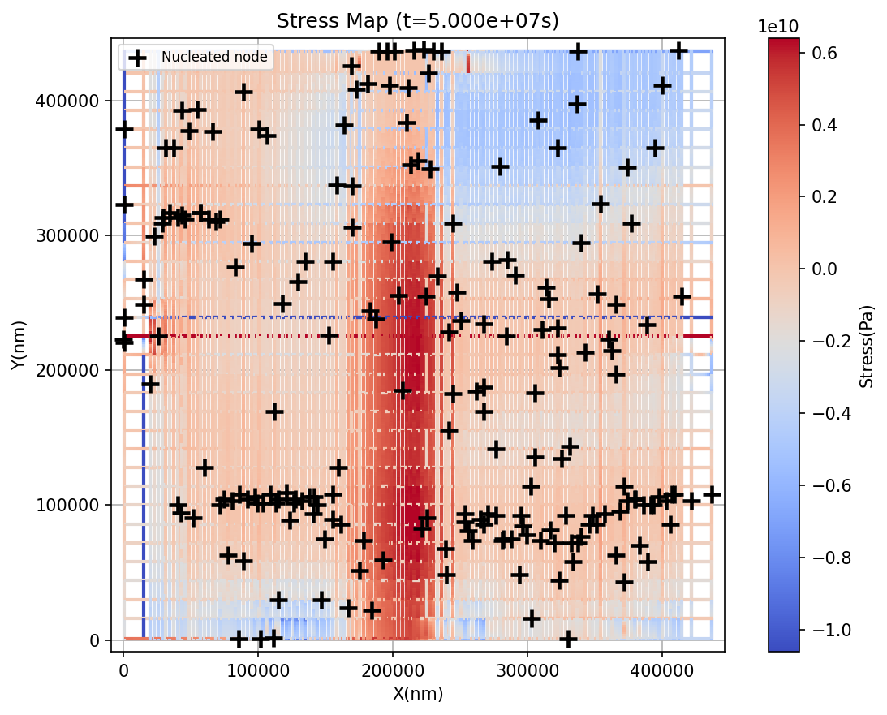
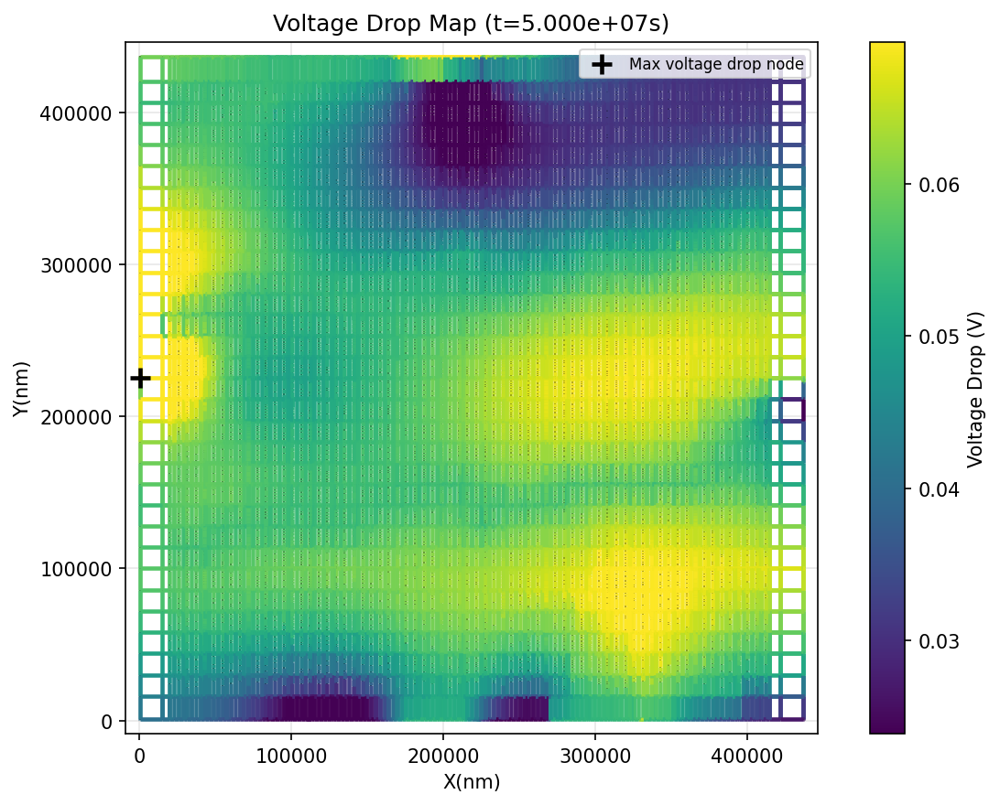
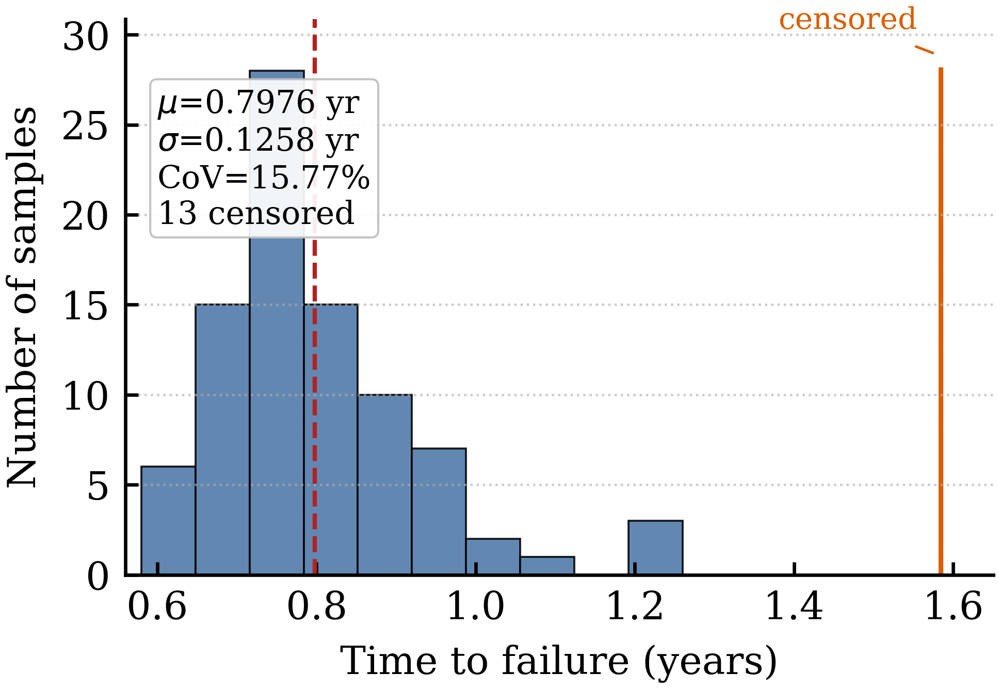

NovaEM tells you where your power grid will fail and when — accounting for electromigration, thermomigration, and IR-drop together, on the full chip. Two engines share the same physics: one exact enough to sign off on, one fast enough to run on every iteration.
Classic electromigration rules are over-conservative, so designs get overbuilt to pass them. NovaEM replaces the rules with real physics — the actual heat, current, and stress your chip will see — and then makes that analysis fast enough to run whenever you want it, not just once at the end.
Same physics, two ways to run it. Pick the one your task needs — or use both: explore fast with AI, confirm with the numerical engine.
Your golden reference for full-chip sign-off.
The same answers, fast enough to use every day.
The AI engine isn't a black box — it's measured against the real one. NovaEM-PINN is built and checked against NovaEM Core, so every fast answer comes with a known margin against physics-exact results, and anything important can be re-run the slow way to confirm. That's the difference between AI you can sign off on and AI you can only explore with.
Everything you need to know whether your power grid survives its service life — and what to change if it doesn't.
Electromigration, thermomigration, and IR-drop analyzed as one connected problem — because on real silicon they are one connected problem.
Feed NovaEM the real temperature map of your chip, including measured profiles. Where the hotspots sit matters more than how hot the die runs on average.
Wires heat themselves as current flows through them. NovaEM finds those local hotspots instead of averaging them away.
As wires age and degrade, the analysis updates itself — so you see how the power grid actually behaves years into the product's life, not just on day one.
Get lifetime as a range with real odds attached, not a single pessimistic number you have to guess a margin around.
Drops into the flow you already run — open-source OpenROAD or Synopsys ICC / Fusion Compiler. Validated on six industrial-scale designs.
An AI engine that learns the physics rather than memorizing past results — so it stays accurate on designs it has never seen. Up to 86× faster, within 0.05% of the reference.
Every answer arrives with its own confidence range attached — no separate statistical run, and 145× faster than the commercial-tool equivalent.
Manufacturing spread, temperature swings, and changing workloads are part of the model — so you design for what will actually ship, not the worst corner stacked on worst corner.
Every input and output is scriptable, so NovaEM plugs straight into automated and AI-driven design flows — closing the loop on IR-drop and EM sign-off without a human in the middle.
No new methodology to learn and no model to hand-build — NovaEM takes the power grid you already have and tells you where it fails, and when.
The power grid from your existing layout, plus a heat map if you have one.
A fast first pass sets aside the nets that will never break, so the real compute goes where the risk is.
NovaEM runs your grid forward through its service life, tracking how heat, current, and wear compound on each other.
Where voids form, how far IR-drop has drifted, and the date your design crosses the limit you set.
Switch on NovaEM-PINN and the same analysis returns in seconds instead of hours — same inputs, same outputs, no change to how you work.
Vias are where power grids break first. NovaEM keeps watching them the whole time a void grows, instead of writing them off at the first sign of damage.
The largest validated design — 208 nets, up to 10,900 nodes each — completes in about 30 seconds. Small blocks finish in under two.
NovaEM-PINN is trained on the governing physics itself, so it holds up on designs it has never seen — the usual failure mode of AI tools trained only on past results.
Training happens on our side, once. You get inference — seconds per run, no GPU cluster and no data-collection project on your end.
Understanding how manufacturing variation affects chip lifetime is the most expensive question a reliability flow can ask — which is why most teams skip it. NovaEM-PINN makes it routine. Here is the same analysis run three ways, on structures from small to large.
| Structure size | Commercial tool | NovaEM | NovaEM-PINN | Speedup | Difference |
|---|---|---|---|---|---|
| Small | 22 min | 7.6 min | 0.25 s | 86× | 0.02% |
| Medium | 37 min | 12.7 min | 0.43 s | 77× | 0.03% |
| Large | 50 min | 17.2 min | 0.39 s | 63× | 0.03% |
| Very large | 60 min | 22.2 min | 0.61 s | 46× | 0.04% |
| Largest | 69 min | 25.4 min | 0.80 s | 36× | 0.04% |
| Method | Time | Speedup |
|---|---|---|
| Commercial tool | 48 min | 1× |
| NovaEM | 17 min | 2.8× |
| NovaEM-PINN | 20 sec | 145× |
That is the difference between an analysis you schedule overnight and one you run every time you change the design.
Four hundredths of a percent, on structures with hundreds of segments. For every decision you'd make from this analysis, the fast answer and the exact answer are the same answer.
Published and peer-reviewed at ICCAD 2024 (read the paper). Commercial-tool comparison run against COMSOL. The engine named “EMSpice” in the paper is NovaEM.
Two chips running at the same average temperature can have completely different lifetimes. What matters is where the heat sits relative to where the current flows — and that is exactly what rule-based EM checks cannot see.
| Heat pattern | Average | Hotspot | Nets at risk | Lifetime |
|---|---|---|---|---|
| Flat 353K | 353K | 353K | 7 | 5.0 months |
| Self-heating, cool | 321K | 346K | 14 | 11.5 months |
| Self-heating, typical | 353K | 387K | 18 | 9.4 months |
| Self-heating, hot | 374K | 407K | 18 | 5.5 months |
| Measured chip, cool | 310K | 337K | 12 | 7.1 months |
| Measured chip, typical | 353K | 388K | 16 | passes |
| Measured chip, hot | 373K | 408K | 16 | passes |
Look at rows three and six: same average temperature, same peak temperature, opposite outcomes. One design fails in nine months. The other passes. The only difference is where the hotspot lands.
| Heat pattern | Average | Hotspot | Nets at risk | Lifetime |
|---|---|---|---|---|
| Flat 353K | 353K | 353K | 207 | 4.0 months |
| Self-heating, cool | 320K | 353K | 206 | 4.0 months |
| Self-heating, typical | 353K | 385K | 206 | 4.0 months |
| Self-heating, hot | 373K | 406K | 206 | 4.0 months |
| Measured chip, cool | 310K | 342K | 206 | 3.8 months |
| Measured chip, typical | 353K | 385K | 206 | 3.8 months |
| Measured chip, hot | 373K | 406K | 206 | 3.8 months |
This design carries so much current that almost every net is at risk no matter how you cool it — the lifetime barely moves across a 60-degree range. Cooling won't save this one; the grid needs redesigning, and NovaEM shows you that before tape-out.
It depends entirely on the design — which is why you have to measure it. The RISC-V core's lifetime swings between 7 and 15 months depending on how the silicon comes out. The ARM core lands in the same place every time. Guessing a margin would leave one over-designed and the other exposed.
Acceleration that changes your answer isn't worth having. These runs return identical lifetime and IR-drop numbers to the unaccelerated solve — the speed is free.
Real NovaEM output on RISC-V and ARM Cortex-A power grids — not a diagram of what the tool could show you.









All figures generated by NovaEM on Synopsys-extracted power grids at 32/28 nm.
Not toy test cases — real power grids pulled from Synopsys Fusion Compiler at 32/28 nm.
| Design | Size | Voltage drop, new | Voltage drop, aged | Lifetime | Analysis time |
|---|---|---|---|---|---|
| AES engine | 97 nets | 6.1% | 6.9% | passes | 3.8 s |
| ARM pad ring | 68 nets | 0.3% | 0.3% | passes | 2.0 s |
| JPEG codec | 178 nets | 6.6% | 6.8% | passes | 12.9 s |
| Dual RAM | 55 nets | 0.1% | 0.1% | passes | 1.6 s |
| RISC-V core | 186 nets | 6.2% | 29.6% | 9.4 months | 4.5 s |
| ARM logic core | 208 nets | 8.9% | 22.2% | 4.0 months | 31.5 s |
Two things stand out. First, speed: the largest design finishes in half a minute, the smallest in under two seconds — this is analysis you can run on every iteration, not once before tape-out. Second, where the risk hides: the RISC-V core looks healthy at 6.2% voltage drop on day one, then degrades to 29.6% — and only 18 of its 186 nets are responsible. A handful of overloaded wires can take down a grid that passes every check you'd run today.
NovaEM is available now for evaluation. Bring us a design and we'll show you what it finds.